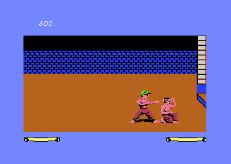

<meta charset="utf-8">
<meta name="viewport" content="width=device-width, initial-scale=1">
<title>Fist II: The Legend Continues</title>
<link rel="preconnect" href="https://fonts.googleapis.com">
<link rel="stylesheet" href="https://fonts.googleapis.com/css2?family=Lato:wght@400;700;900&family=IBM+Plex+Mono:wght@400;500&display=swap">
<link rel="stylesheet" href="reference/fist-page.css">
<style>
.pad{display:grid;grid-template-columns:repeat(3,minmax(0,1fr));gap:6px;max-width:560px;margin:0 0 8px}
.pad div{background:var(--surface-2);border:1px solid var(--line-soft);border-radius:6px;padding:8px 6px;text-align:center;font-size:14px;line-height:1.3;min-height:52px;display:flex;align-items:center;justify-content:center}
.pad div.mid{background:none;border:none;font-family:var(--fm);font-size:12px;color:var(--ink-mute)}
.pads{display:grid;grid-template-columns:1fr 1fr;gap:24px}
@media (max-width:760px){.pads{grid-template-columns:1fr}}
#tri-table td:nth-child(2){white-space:nowrap}
.tri{background:#000;border-radius:3px;image-rendering:pixelated;vertical-align:middle}
</style>
<!-- tabs -->
<header class="hero">
  <p class="eyebrow">Commodore 64 · 1986 · Beam Software</p>
  <h1>Fist II: The Legend Continues</h1>
  <p class="sub">How the game is played: the quest, the joystick, the energy bar, the eight scrolls and the enemies who come back, from the manual and from the code.</p>
</header>
<main class="wrap">
<section id="quest">
  <p class="fig">The quest</p>
  <h2 class="t">Find eight scrolls, then the Warlord</h2>
  <p class="lede">You play a young disciple, descended from a Grand Master of the Exploding Fist, sent by the village elders "to find and defeat the evil Warlord" in his volcano fortress.<sup class="fn"><a href="about.html#src-1" title="The C64 manual">1</a></sup></p>
  <p>The masters wrote their secrets on scrolls and scattered them across the land. Each scroll belongs to a temple, where the hero meditates on the trigram printed on the altar mat; with the matching scroll he learns what it teaches, and that opens a way somewhere else. The Warlord's men wait along the way, and each one has to be fought. The volcano lies past several of those obstacles, and its last room starts the ending.</p>
  <p>The land is 123 joined screens. The <a href="levels.html">Maps and solution</a> tab has all of them and a route through.</p>
</section>
<section id="controls">
  <p class="fig">Controls</p>
  <h2 class="t">Eight directions, with and without fire</h2>
  <p class="lede">The joystick in port 2 does everything. Each direction means one thing with the fire button up, and another with it pressed. The diagrams are the manual's, drawn for a fighter facing right: "forward" is the way he faces.<sup class="fn"><a href="about.html#src-1" title="The C64 manual">1</a></sup></p>
  <div class="pads">
    <div><p class="note">Fire button up</p><div class="pad">
      <div>forward somersault</div><div>jump, climb up</div><div>high punch</div>
      <div>walk back</div><div class="mid">stick</div><div>walk forward</div>
      <div>reverse somersault</div><div>duck, climb down</div><div>jab</div></div></div>
    <div><p class="note">Fire button pressed</p><div class="pad">
      <div>back kick</div><div>flying kick</div><div>high kick</div>
      <div>roundhouse, turn</div><div class="mid">stick</div><div>mid kick</div>
      <div>rear sweep</div><div>sweep</div><div>low kick</div></div></div>
  </div>
  <p>To turn round, start a roundhouse and let go of the button. Blocking is automatic: step back just as the opponent is about to land a blow, and the hero blocks high or low as the blow needs, so holding a block does not work. The kneeling punch, "the true Exploding Fist punch", is a crouch followed by a push forward. RESTORE pauses the game and F5 ends it.</p>
  <p>In the code, a table turns the joystick position and the fire button into a move (<code>$33C3</code>), and a second says which moves may follow which (<code>$33E3</code>). The forward somersault is how the hero clears a hole or a drop: it carries him about ten columns.</p>
</section>
<section id="chi">
  <p class="fig">Chi</p>
  <h2 class="t">One energy bar for the whole journey</h2>
  <p class="lede">The manual calls energy Chi.<sup class="fn"><a href="about.html#src-1" title="The C64 manual">1</a></sup> The hero's bar is the scroll at the bottom left, the opponent's at the bottom right, and the hero's carries over from fight to fight.</p>
  <figure class="shot" style="margin-top:0"><figcaption>A kick lands and the score goes up. Captured in an emulator.</figcaption></figure>
  <table class="t" style="margin-top:20px">
    <tr><th>What</th><th>How it works</th></tr>
    <tr><td>Starting energy</td><td>47 (<code>$26D6</code>), which is also the bar's limit to begin with</td></tr>
    <tr><td>Getting it back</td><td>one point every 128 frames (<code>$2D14</code>), about 2.5 seconds, up to the limit</td></tr>
    <tr><td>Meditating</td><td>fills the bar and sets its limit to 47 + 4 for every two opponents beaten in the whole game, at most 127 (<code>$396F</code>)</td></tr>
    <tr><td>Lives</td><td>one to start with, one more for each scroll delivered (<code>$2CCD</code>), one lost at each defeat (<code>$353E</code>); the hero starts again at the last temple he meditated in (<code>$2D33</code>)</td></tr>
    <tr><td>Hazards</td><td>cost 2 or 10 energy (<code>$2A57</code>); a blow at the right moment knocks one away (<code>$2A87</code>)</td></tr>
  </table>
  <p>The manual says the limit grows "depending on the number of opponents you have defeated since your last meditation".<sup class="fn"><a href="about.html#src-1" title="The C64 manual">1</a></sup> The code counts every defeat since the game began instead: the counter (<code>$048C</code>) is cleared only when a game starts (<code>$2135</code>), and meditating reads it (<code>$396F</code>) without clearing it. So the limit reaches 127 after twenty defeats and stays there, wherever the hero meditates. The counter itself stops at 31 (<code>$352D</code>).</p>
</section>
<section id="trigrams">
  <p class="fig">Scrolls</p>
  <h2 class="t">Eight scrolls, eight trigrams</h2>
  <p class="lede">Each scroll carries a trigram, three lines whole or broken, and the manual gives each a hint "as to how and when their knowledge can be used".<sup class="fn"><a href="about.html#src-1" title="The C64 manual">1</a></sup> The status band shows the trigram of every scroll found. Matching the game's icons to the manual's drawings puts a name to each scroll, and the code says what each one actually does.</p>
  <table class="t" id="tri-table">
    <tr><th>Scroll</th><th>Trigram</th><th>The manual's hint</th><th>What the code does once it is delivered</th></tr>
    <tr><td>1</td><td><canvas class="tri" data-scroll="0"></canvas> Ch'ien</td><td>"associated with strength"</td><td>stone heaps can be broken (<code>$0A59</code>)</td></tr>
    <tr><td>2</td><td><canvas class="tri" data-scroll="1"></canvas> Sun</td><td>"the ability to pass through inimicable elements"</td><td>opens the exit from room 52 to room 80 (<code>$36DE</code>), on the way to the river</td></tr>
    <tr><td>3</td><td><canvas class="tri" data-scroll="2"></canvas> Kan</td><td>"the trigram of danger ... it can also afford protection"</td><td>the hero can leave room 76, below the volcano, alive: without it his energy drops to 0 (<code>$0649</code>)</td></tr>
    <tr><td>4</td><td><canvas class="tri" data-scroll="3"></canvas> Chen</td><td>"can awaken the dead, move the immovable"</td><td>trees can be kicked down (<code>$0A44</code>)</td></tr>
    <tr><td>5</td><td><canvas class="tri" data-scroll="4"></canvas> K'un</td><td>"earthly strength. It may bend but cannot be broken"</td><td>a horde of opponents ends after the one being fought (<code>$27AD</code>)</td></tr>
    <tr><td>6</td><td><canvas class="tri" data-scroll="5"></canvas> Ken</td><td>"patient resting, of calm, of poise"</td><td>the crevice in room 79 narrows enough to somersault across (<code>$064C</code>)</td></tr>
    <tr><td>7</td><td><canvas class="tri" data-scroll="6"></canvas> Li</td><td>"an eternal source of light, even in the darkest of dark"</td><td>one zone's dark colour scheme is swapped for a lit one (<code>$10E5</code>)</td></tr>
    <tr><td>8</td><td><canvas class="tri" data-scroll="7"></canvas> Tui</td><td>"the bringer of health, of well-being in the presence of malignance"</td><td>the poison rooms, 64-67, stop draining the hero (<code>$2CE4</code>)</td></tr>
  </table>
  <p class="cap">The icons are drawn from the game's status-band font (<code>$E800</code>), two characters per scroll from two small tables (<code>$054B</code>), top line first. Eight bytes record the scrolls (<code>$0405</code>): 1 when a scroll is found, $80 once it is delivered. The manual lists the trigrams in a different order (Ch'ien, Sun, Chen, Kan, Ken, K'un, Li, Tui); the names here follow the lines, not the list. Where each scroll lies and the way to its temple are on the <a href="levels.html#gives">Maps and solution</a> tab.</p>
</section>
<section id="enemies">
  <p class="fig">Enemies</p>
  <h2 class="t">The Warlord's men, and hordes of them</h2>
  <p class="lede">The manual names peasant soldiers, warrior guards, ninjas who throw stars, masked shoguns, assassins who "cannot be outrun", and mud warriors from the caves, with snakes, panthers and bats besides. Fighting is optional: "you need not fight them to continue your exploration ... but you will not gain beneficial experience".<sup class="fn"><a href="about.html#src-1" title="The C64 manual">1</a></sup></p>
  <table class="t">
    <tr><th>What</th><th>Rule</th></tr>
    <tr><td>An opponent's energy</td><td>a random 31 to 63, and 64 more once the hero has beaten 16 (<code>$274E</code>)</td></tr>
    <tr><td>Points</td><td>100 for each blow landed, times the move's value (<code>$051D</code>)</td></tr>
    <tr><td>A horde</td><td>at some places, beating one opponent brings on the next (<code>$27A1</code>), up to ten in all (<code>$2875</code>), until scroll 5 is delivered</td></tr>
    <tr><td>Running away</td><td>an opponent counts as beaten only when his energy runs out (<code>$3522</code>); one left behind is waiting there next time</td></tr>
  </table>
  <p>Opponents fight with attack combinations, short scripts of moves chosen from a jump table (<code>$3288</code>) and a random number. How a blow is judged to land is <a href="#blows">below</a>.</p>
</section>
<section id="blows">
  <p class="fig">Blows</p>
  <h2 class="t">How a blow is judged to land</h2>
  <p class="lede">Whether a blow lands is worked out from the move and the frame of its animation, not from the pictures touching.</p>
  <p>For each move and each frame, a table gives either $80, no strike in this frame, or a value the game compares with the distance between the two fighters (<code>$379C</code>). There are two tables, one for fighters facing each other (<code>$7CA6</code>) and one for both facing the same way (<code>$7E53</code>), so a kick behind you is judged by its own numbers. The hardware's sprite collision register is read as well (<code>$3328</code>). A blow that lands scores 100 points times the move's value (<code>$051D</code>).</p>
  <p>A move is a script of four-byte steps (<code>$AF46</code>): how long to hold, which pose, and how far to move across and up, read one step at a time (<code>$1AF0</code>). There are 44 scripts. The opponent's combinations are picked with a random number from an 8-bit shift register (<code>$3141</code>).</p>
</section>
<section id="return">
  <p class="fig">Late game</p>
  <h2 class="t">After thirty defeats, the dead come back</h2>
  <p class="lede">Every place where an opponent waits is a record in a table of 54 (<code>$E609</code>), and beating him marks the record done (<code>$3522</code>). A done record stays quiet until the hero has beaten 30 opponents. From then on, each time the game checks a done opponent's place as the hero reaches it, it rolls a random number and brings him back one time in four (<code>$2820</code>).</p>
  <p>A player on Lemon64<sup class="fn"><a href="about.html#src-5" title="A player's comments on Lemon64">5</a></sup> described the same thing from play: enemies "start respawning later in the game", tied to "a kill count threshold" rather than to the scrolls; an opponent scrolled off the screen before he is beaten is still there on the way back; and in the late game a returning opponent "may re-appear, or he may not". The code agrees on all three. The same player's claim that the fifth trigram has "no measurable effect" fits too, as far as damage goes: scroll 5's only reader is the horde check above (<code>$27AD</code>), so it never touches a blow's strength. It shortens hordes instead.</p>
  <p>A 2023 review on The King of Grabs<sup class="fn"><a href="about.html#src-8" title="The King of Grabs, 2023">8</a></sup> counts "bugs that make defeated enemies re-appear" among the game's faults. The code shows the return is meant: a counter, a threshold of 30 and a random roll, not a slip.</p>
  <p class="cap">The player tested the cassette version; this site's reading is of the Mindscape disk. The rules match what the player saw, but the two releases have not been compared byte for byte.</p>
</section>
<section id="tournament">
  <p class="fig">Tournament</p>
  <h2 class="t">A second game on the disk, for practice</h2>
  <p>The manual describes a Tournament mode for one or two players, against "a series of computer opponents or a friend"<sup class="fn"><a href="about.html#src-1" title="The C64 manual">1</a></sup>, with keyboard controls for both fighters (F7 switches between keyboard and joystick). The Mindscape disk offers it as Training, beside the Adventure, and the Mindscape manual<sup class="fn"><a href="about.html#src-9" title="The Mindscape manual">9</a></sup> sets out its rules. One player faces opponents of rising skill in different settings and must beat each one twice to go up a dan. Two players fight eight rounds of sixty seconds, two in each of four places. Points come for every blow that lands, and for the time left on the clock after a knockout. Training is a separate program, and this site covers only the Adventure.</p>
</section>
</main>
<script src="../../lib/c64.js"></script>
<script src="reference/fist-page.js"></script>
<script>
(async function () {
  let G; try { G = await FIST.load(); } catch (e) { FIST.fail(e); return; }
  const M = G.ram;
  document.querySelectorAll('canvas.tri').forEach((cv) => {
    const y = +cv.dataset.scroll, s = 2, ctx = C64.canvas(cv, 16 * s, 8 * s);
    ctx.fillStyle = '#000'; ctx.fillRect(0, 0, cv.width, cv.height); ctx.fillStyle = '#fff';
    [M[0x054B + y], M[0x0553 + y]].forEach((c, k) => {
      for (let r = 0; r < 8; r++) { const v = M[0xE800 + c * 8 + r];
        for (let b = 0; b < 8; b++) if (v >> (7 - b) & 1) ctx.fillRect((k * 8 + b) * s, r * s, s, s); }
    });
    cv.title = 'scroll ' + (y + 1) + ': characters ' + M[0x054B + y] + ' and ' + M[0x0553 + y];
  });
})();
</script>
